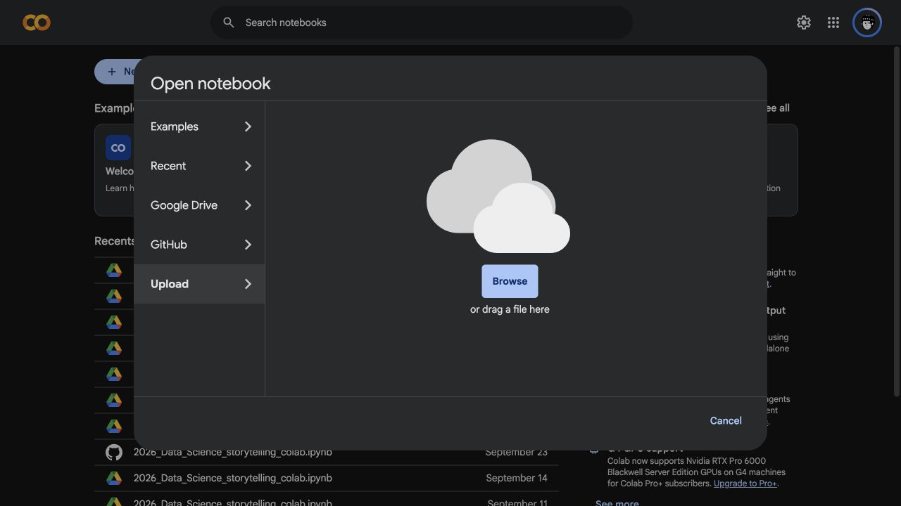
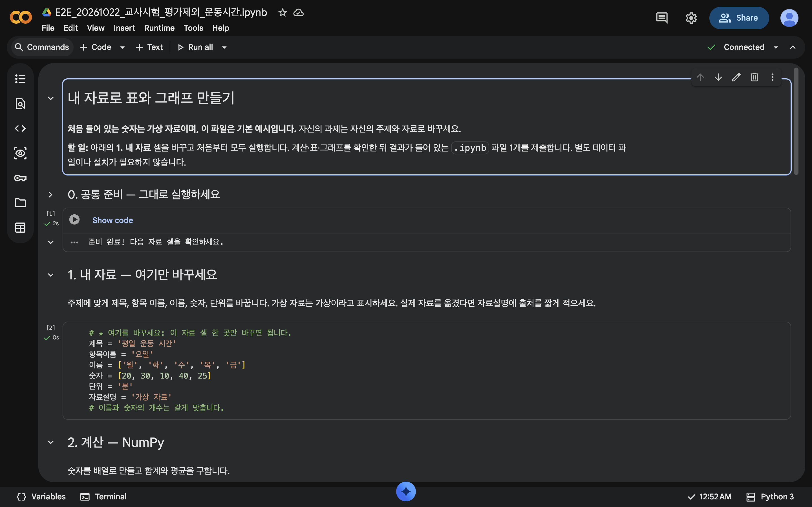
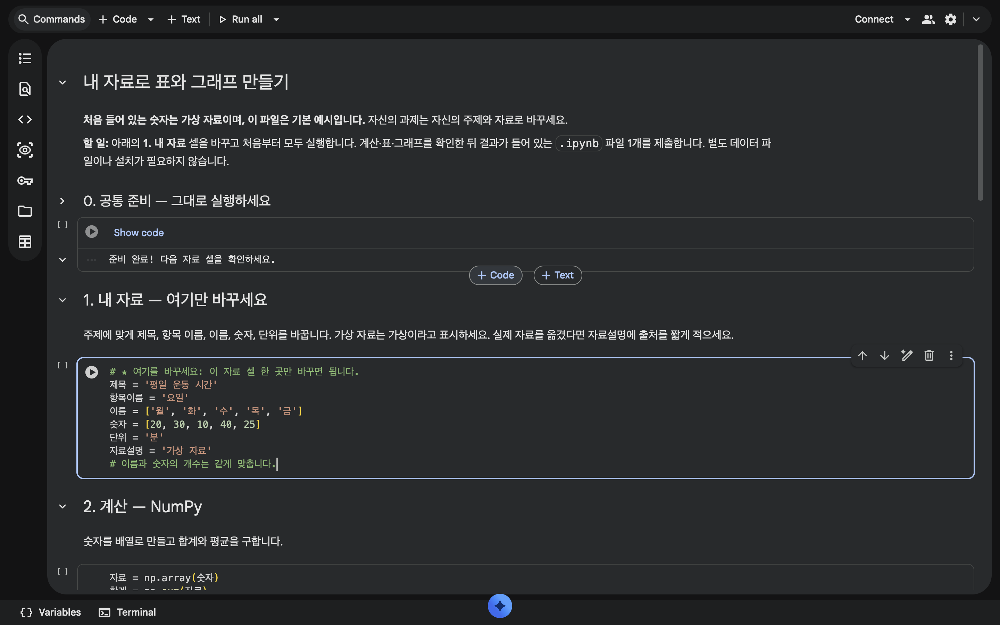
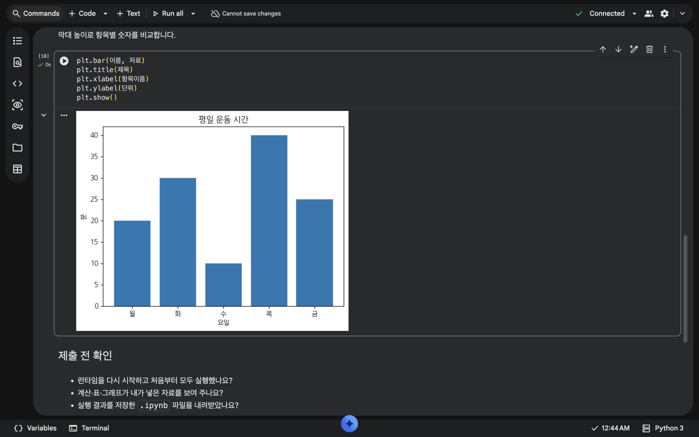
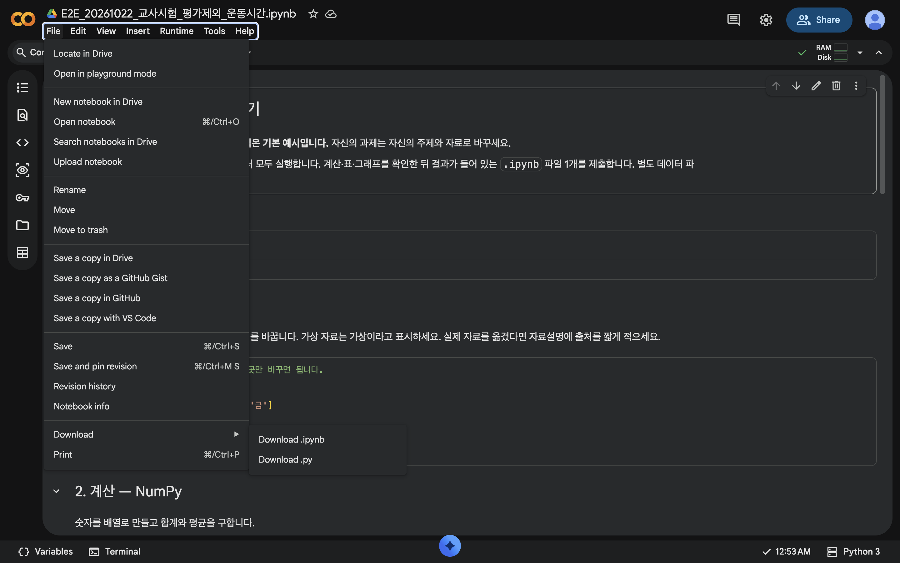
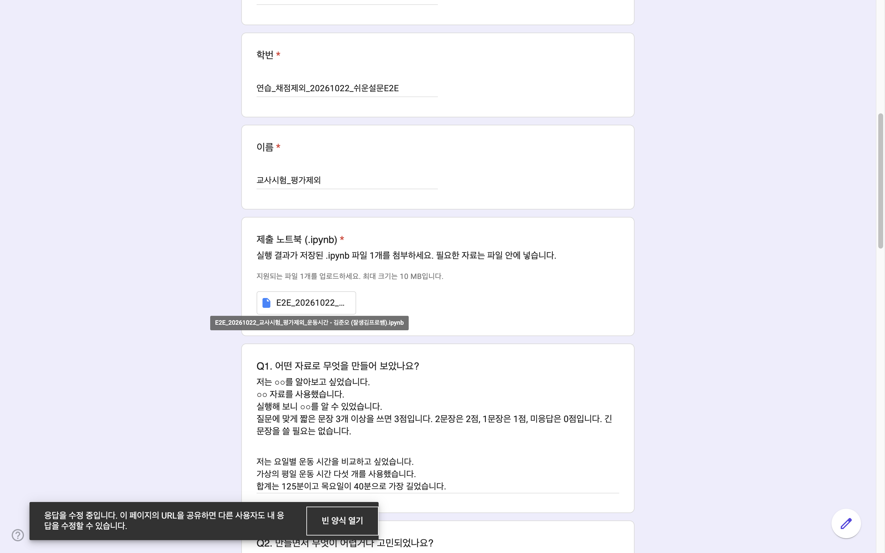
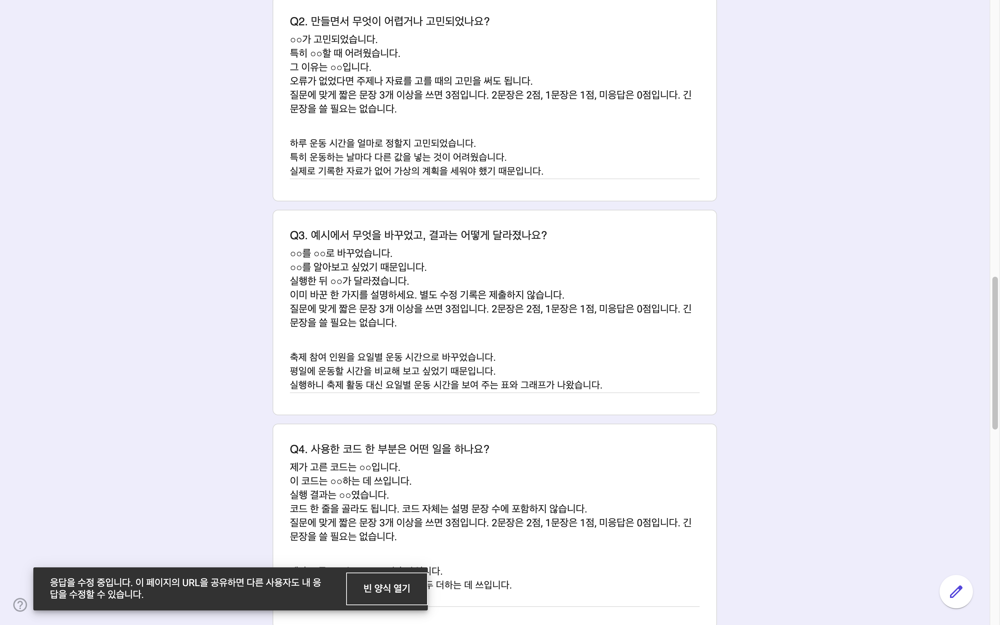
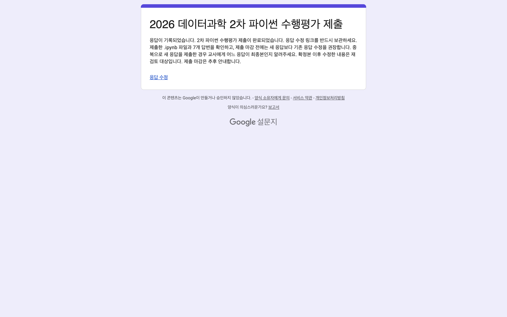

1. 어떤 자료로 무엇을 만들어 보았나요?
문장 시작 도움말: 저는 ○○를 알아보고 싶었습니다. / ○○ 자료를 사용했습니다. / 실행해 보니 ○○를 알 수 있었습니다.
3문장 예시
저는 요일별 운동 시간을 비교하고 싶었습니다.
가상의 평일 운동 시간 다섯 개를 사용했습니다.
합계는 125분이고 목요일이 40분으로 가장 길었습니다.
2026 데이터과학 · 고등학교 2학년 · 2차 파이썬
예시를 조금씩 바꾸며 내가 원하는 결과를 만들어 봅시다. 자료 셀 한 곳을 바꾸고, 실행 결과를 확인한 뒤 제출합니다.
내 계정의 Drive에 나만의 작업 파일을 만듭니다.
★ 1. 내 자료 셀에서 주제와 이름·숫자를 바꿉니다.
계산·표·그래프가 내 자료를 보여 주는지 확인합니다.
.ipynb 파일 1개와 답변 7개를 설문에 넣고 제출합니다.
30점 = 답변 21점 + 세 라이브러리 활용·실행 9점
질문마다 관련된 완결 문장 3개 이상 3점 · 2개 2점 · 1개 1점 · 인정되는 문장 없음 0점
ZIP을 받았다면 압축을 모두 풀고 폴더 안의 index.html을 여세요. 사진·영상이 함께 열리도록 HTML만 따로 옮기지 마세요.
제출할 것은 두 가지입니다. 실행 결과가 저장된 .ipynb 파일 1개(10MB 이하)와 설문의 일곱 답변입니다. 화면 캡처나 별도 CSV·Excel은 필수가 아닙니다.
각 단계 끝의 ‘다음’을 누르면 이어서 볼 수 있습니다. 다시 볼 부분은 제목을 눌러 펼치세요.
축제 기본 예시 파일을 먼저 받으세요. Google Colab을 열어 받은 .ipynb 파일을 업로드한 뒤 내 Drive에 사본을 만드세요.
오른쪽 위 계정 사진에서 학교에서 사용할 자신의 Google 계정으로 로그인했는지 확인합니다.
Drive 사본은 온라인 작업 파일입니다. 마지막에 컴퓨터로 내려받는 제출용 .ipynb와는 서로 다른 파일입니다. 이름에 .ipynb가 이미 있으면 한 번만 남깁니다.


★ 1. 내 자료 셀을 찾습니다. 운동 시간·공부 시간처럼 내가 설명할 수 있는 주제를 고르고 아래 여섯 항목을 바꿉니다. 공통 준비·계산·표·그래프 코드는 그대로 사용해도 됩니다.
| 바꿀 곳 | 뜻 | 운동 시간 예시 |
|---|---|---|
| 제목 | 무엇을 알아볼까요? | 평일 운동 시간 |
| 항목이름 | 이름들을 묶어 부르는 말 | 요일 |
| 이름 | 비교할 항목들 | 월·화·수·목·금 |
| 숫자 | 각 이름에 대응하는 값 | 20·30·10·40·25 |
| 단위 | 숫자의 단위 | 분 |
| 자료설명 | 가상 자료인지, 기록·출처는 무엇인지 | 연습을 위해 만든 가상 운동 시간 |
제목 = "평일 운동 시간"
항목이름 = "요일"
이름 = ["월", "화", "수", "목", "금"]
숫자 = [20, 30, 10, 40, 25]
단위 = "분"
자료설명 = "연습을 위해 만든 가상 운동 시간"이 코드는 예시입니다. 내 주제와 자료로 바꾸세요. 글자는 따옴표로 묶고, 숫자 사이는 쉼표로 구분합니다.
이름과 숫자는 순서대로 한 쌍입니다. 월요일은 20분, 목요일은 40분입니다. 이름과 숫자의 개수를 같게 맞추고 같은 단위를 씁니다. 항목 5개는 예시이며 필수 개수가 아닙니다. 가상 자료는 가상이라고 적고, 가져온 자료는 출처를 적습니다.
아래는 내려받는 예시 노트북의 주요 코드입니다. 내 자료 셀만 바꾸어 실행하세요.
# ★ 여기를 바꾸세요: 이 자료 셀 한 곳만 바꾸면 됩니다.
제목 = '평일 운동 시간'
항목이름 = '요일'
이름 = ['월', '화', '수', '목', '금']
숫자 = [20, 30, 10, 40, 25]
단위 = '분'
자료설명 = '가상 자료'
# 이름과 숫자의 개수는 같게 맞춥니다.자료 = np.array(숫자)
합계 = np.sum(자료)
평균 = np.mean(자료)
print(제목, "—", 자료설명)
print("합계:", 합계, 단위)
print("평균:", 평균, 단위)표 = pd.DataFrame({항목이름: 이름, "값(" + 단위 + ")": 자료})
display(표)plt.bar(이름, 자료)
plt.title(제목)
plt.xlabel(항목이름)
plt.ylabel(단위)
plt.show()
| 확인할 결과 | 사용하는 라이브러리 | 운동 시간 예시 |
|---|---|---|
| 합계·평균 계산 | NumPy | 합계 125분 · 평균 25분 |
| 이름과 숫자를 나란히 표시한 표 | pandas | 월 20분 · 목 40분 |
| 항목별 숫자를 비교하는 막대그래프 | Matplotlib | 목요일 막대가 40분으로 가장 높음 |
기본 축제 예시는 합계 130명·평균 26명입니다. 주제와 자료를 바꾸면 결과도 달라집니다. 예시와 같은 숫자를 만드는 것이 목표가 아니라, 내 자료와 결과가 맞는지 확인하는 것이 목표입니다.
연습으로 축제 예시의 게임 값만 30에서 50으로 바꾸고 모두 실행해 보세요. 합계는 150명, 평균은 30명, 게임의 표 값과 막대 높이는 50으로 바뀝니다. 그다음 내 주제와 자료로 완성합니다.
이 연습값은 정답이나 필수 제출 조건이 아닙니다. 수정 횟수나 어려운 기능에 별도 점수를 주지 않습니다.

① 결과 저장 → ② .ipynb 다운로드 → ③ 파일·답변 작성 → ④ 제출 완료 순서입니다.

어떤 자료를 썼고, 무엇을 바꾸었으며, 결과가 어떻게 달라졌는지 내 말로 적습니다. 각 질문에 맞는 짧은 세 문장 이상이면 3점입니다.
질문에 맞게 짧은 문장 3개 이상을 쓰면 3점입니다. 2문장은 2점, 1문장은 1점, 미응답은 0점입니다. 긴 문장을 쓸 필요는 없습니다.
아래는 가상 평일 운동 시간(월~금 20·30·10·40·25분)의 예시입니다. 자신의 과제와 실제 경험으로 바꿉니다. 시작말은 도움말이며 각각의 배점 항목이 아닙니다.
문장 시작 도움말: 저는 ○○를 알아보고 싶었습니다. / ○○ 자료를 사용했습니다. / 실행해 보니 ○○를 알 수 있었습니다.
3문장 예시
저는 요일별 운동 시간을 비교하고 싶었습니다.
가상의 평일 운동 시간 다섯 개를 사용했습니다.
합계는 125분이고 목요일이 40분으로 가장 길었습니다.
문장 시작 도움말: ○○가 고민되었습니다. / 특히 ○○할 때 어려웠습니다. / 그 이유는 ○○입니다.
오류가 없었다면 주제나 자료를 고를 때의 고민을 써도 됩니다.
3문장 예시
하루 운동 시간을 얼마로 정할지 고민되었습니다.
특히 운동하는 날마다 다른 값을 넣는 것이 어려웠습니다.
실제로 기록한 자료가 없어 가상의 계획을 세워야 했기 때문입니다.
문장 시작 도움말: ○○를 ○○로 바꾸었습니다. / ○○를 알아보고 싶었기 때문입니다. / 실행한 뒤 ○○가 달라졌습니다.
이미 바꾼 한 가지를 설명하세요. 별도 수정 기록은 제출하지 않습니다.
3문장 예시
축제 참여 인원을 요일별 운동 시간으로 바꾸었습니다.
평일에 운동할 시간을 비교해 보고 싶었기 때문입니다.
실행하니 축제 활동 대신 요일별 운동 시간을 보여 주는 표와 그래프가 나왔습니다.
문장 시작 도움말: 제가 고른 코드는 ○○입니다. / 이 코드는 ○○하는 데 쓰입니다. / 실행 결과는 ○○였습니다.
코드 한 줄을 골라도 됩니다. 코드 자체는 설명 문장 수에 포함하지 않습니다.
3문장 예시
제가 고른 코드는 np.sum(자료)입니다.
이 코드는 다섯 날의 운동 시간을 모두 더하는 데 쓰입니다.
계산한 합계는 125분이었습니다.
문장 시작 도움말: ○○할 때 써 보고 싶습니다. / ○○ 자료를 넣어 볼 수 있습니다. / 그러면 ○○에 도움이 될 것 같습니다.
3문장 예시
시험 기간의 공부 계획을 세울 때 써 보고 싶습니다.
과목별로 공부할 시간을 넣어 볼 수 있습니다.
그러면 과목마다 시간을 나누는 데 도움이 될 것 같습니다.
문장 시작 도움말: ○○를 새롭게 알았습니다. / 실제로 ○○를 확인했습니다. / 그래서 ○○라고 느꼈습니다.
3문장 예시
평균만 보면 날짜별 차이를 알기 어렵다는 점을 알았습니다.
평균은 25분이지만 수요일은 10분이고 목요일은 40분이었습니다.
그래서 표와 그래프도 함께 보는 것이 좋다고 느꼈습니다.
문장 시작 도움말: ○○가 아쉽습니다. / ○○이기 때문입니다. / 다음에는 ○○해 보고 싶습니다.
앞으로 바꾸고 싶은 한 가지를 적으세요.
3문장 예시
가상으로 정한 운동 시간만 사용한 점이 아쉽습니다.
계획대로 운동할 수 있는지 아직 모르기 때문입니다.
다음에는 실제 운동 시간을 기록해서 비교해 보고 싶습니다.


체크 표시는 이 안내를 보는 동안의 확인용이며 설문에 전송되지 않습니다.

제출한 뒤 고쳤다면 파일도 교체하세요. 다시 모두 실행 → 저장 → .ipynb 다시 다운로드 → 응답 수정 링크에서 이전 첨부 교체 → 다시 제출합니다. Colab 사본을 바꿔도 이전 첨부는 자동으로 바뀌지 않습니다.
이름과 숫자의 개수, 쉼표·따옴표·대괄호를 확인하세요. 고친 뒤 처음부터 모두 실행합니다. 그래도 어렵다면 바꾼 부분과 오류 화면을 선생님께 보여 주세요.
Colab 링크가 열리지 않으면 기본 예시 파일을 받아 Colab의 파일 → 노트 열기 → 업로드로 엽니다. 학생용 ZIP은 압축을 모두 풀고 index.html을 여세요. images 폴더와 동영상 파일도 함께 있어야 합니다.
프로그램을 따로 설치하지 않습니다. 오류를 선생님에게 보여 주거나 결과를 보관할 때 사용하세요. 화면 캡처는 추가 필수 제출물이 아니며, .ipynb 제출을 대신하지 않습니다.
확인: 이미지 파일이 실제 폴더에 저장되어 다시 열리나요? 결과와 오류 글자가 잘 보이게 담고 불필요한 개인정보는 제외하세요.
질문에 맞는 완결 문장 3개 이상 3점, 2개 2점, 1개 1점, 인정되는 문장 없음·미응답 0점입니다. 줄바꿈이나 코드 조각만으로 문장 수가 늘지는 않습니다. 제목·학번·이름은 무배점입니다.
| 확인된 상태 | 점수 |
|---|---|
| 정상 결과가 확인된 종류 3개 / 2개 / 1개 | 9점 / 7점 / 5점 |
| 정상 결과 0개, 실제 활용 시도 3개 / 2개 / 1개 / 0개 | 3점 / 2점 / 1점 / 0점 |
NumPy·pandas·Matplotlib를 모두 실제로 활용하고 정상 실행하면 9점입니다. import만 적은 것은 실제 활용이 아닙니다. 실행 여부를 확인하지 못한 파일·환경 문제는 판정을 보류합니다.
같은 원인으로 중복 감점하거나 실행 오류 때문에 서술형을 일괄 감점하지 않습니다. 자료 개수·수정 횟수·코드 길이·어려운 기능·도움 여부에 별도 가감점은 없습니다. 선생님이 제출 내용과 실행 결과를 확인하여 최종 평가합니다.